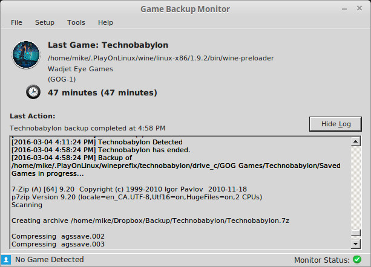

Linux F.A.Q
Can I run GBM on Linux?
- GBM will run on Linux using Mono. You can detect and backup saved games from Linux native games and games running in Wine.
How do I install and run GBM on Linux?
- If you're using Debian or a Debian-based distro such as Ubuntu or Mint. Download the latest deb package from Releases.
- Arch Linux users can install from the Arch Linux User Repository.
- If you prefer a manual install, download the latest 7z package from Releases and extract it to a folder. Navigate to the folder in a terminal and choose from the following options:
- Use the command sudo make install to automatically install and setup GBM as an application on your system.
- Use the command sudo make uninstall to uninstall after using the install script.
- Use the command mono GBM.exe to run GBM from the current location without doing any installation.
Can I compile the GBM source code with Mono?
- No, not without significant work. GBM was initially created on Windows using .NET 4. It uses syntax and features that are not currently supported by the vbnc compiler.
What's required to run GBM on Linux?
- GBM requires a few prerequisites to be installed. Many of these may be pre-installed on your distribution.
- Mono Framework with Visual Basic .NET and WinForms
- The mono-vbnc package and it's dependencies should cover this on debian based distros.
- Visit mono-project.com for the best way to install this on your distro.
- SQLite3 library
- The libsqlite3-0 package on debian based distros.
- 7-Zip
- The p7zip-full package on debian based distros.
- readlink
- readlink is part of the coreutils package and should be installed by default on debian based distros.
- df
- df is part of the coreutils package and should be installed by default on debian based distros.
- Mono Framework with Visual Basic .NET and WinForms
Are there any recommended packages to install when running GBM on Linux?
- GBM (v1.1.0 or later) will use libnotify to send native notifications if it's available.
- libnotify4 and libnotify-bin
- GBM requires the utilities package (libnotify-bin on debian) to be installed. The utility package isn't commonly installed by default.
- libnotify4 and libnotify-bin
Are there any limitations while running in Linux?
- The tray icon may not be shown or function correctly on some desktop environments. Try updating Mono to the most recent stable version if this is an issue.
- The main window cannot be closed and hidden to the system tray in Linux, it will always minimize to the taskbar instead.
- GBM can't automatically detect a game's icon, publisher, or version in Linux. That information can be manually set in the Game Manager.
- GBM can't detect games using a window title, this is due to an unimplemented property in Mono, it may work in future versions.
- You may encounter slight visual or functional glitches with the interface. These glitches are related to Mono's implementation of certain controls and possibly your window manager, video driver or display server version. I've done my best to minimize the worst of these issues.
How do I find the process name and save games?
- Running processes can be searched with this:
ps ax | grep -i wesnoth
- Checking standard folders for configuration and save game folders with this:
name='wesnoth'; find ~/.local ~/.config -iname "*${name}*"; #folders like ~/.local/share/wesnoth echo ~/.* | tr ' ' '\n' | grep -i "${name}"; #folders like ~/.wesnoth - Tracking all files, a game writes to:
strace -f -y -e trace=%file -o /tmp/traced.log wesnoth; less /tmp/traced.log
In Steam it would be the following launch option:strace -f -y -e trace=%file -o /tmp/traced.log %command%
Searching the log file could be done like this:grep "\(\.local\|\.config\)" /tmp/traced.log
- Checks for XDG Base Directory Specification compliance could be done like this:
mkdir -p /tmp/test_{data,conf}; XDG_DATA_HOME=/tmp/test_data/ XDG_CONFIG_HOME=/tmp/test_conf/ wesnoth; ls /tmp/test_*; - Don't forget to move game configurations to the trash folder (not rm!) and check whether restore works.
How do I configure GBM to detect Wine games?
- You don't need to do anything special. Simply set the game's "Process" field to it's Windows executable name (without the extension), exactly the same as configuring a game on Windows.
- Please note that while GBM displays games running as "wine-preloader" from the Wine folder, it still knows the game's actual working directory and will properly backup a relative path configuration.
- In recent versions of GBM, you may also import Windows game configurations directly from the offical list. You can also view and edit details regarding the Wine configuration of each game.
Can GBM share the same backup folder between Linux and Windows?
- Technically you can do this, but it is not recommended and not supported.
- If you're playing a game on multiple platforms, you can manually import saved game backups between Windows and Linux using the "Import Backup" feature in the Game Manager.
I'm getting an error message when I run GBM!
- The following are some common errors and the reason:
- The entry point method could not be loaded.
- This indicates that Mono Visual Basic or WinForms support is not installed.
- 7-Zip was not found. The application cannot continue.
- This indicates that 7-Zip is not installed or that 7za is not located in /usr/bin.
- Other exceptions or crashes on startup.
- Any other error message is probably related to SQLite3 not being installed or detected by Mono.
- The entry point method could not be loaded.
I'm having other problems running GBM in Linux!
- Please report any issues you may be experiencing.